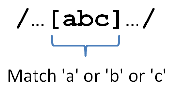

Regular Expressions: Character Classes
AAHCClick on A to make all fonts on the page smaller.
Click on A to make all fonts on the page larger.
Click on HC to toggle high contrast mode. When you move your mouse over
some bold words in high contrast mode, related words are automatically highlighted. Text is shown
in black and white.
Lesson Objectives
When you complete this lesson, you will be able to:
- use regex character classes.
Character Classes
Welcome to the second lesson in this course on regular expressions! If this course is your first encounter with
regexes, be very excited! You're learning a brand new language and a whole new way
that computers get the job done. If you don't yet feel your brain expanding, check in with it again in a
lesson or two.
Time to go beyond the basic literal matching we've done so far with
regexes. You remember that square brackets are special inside a regex, right? Now you'll find out why. Square brackets
in a regex indicate that the regex engine should match any one of the
characters between the square brackets. This is called a character class.

Let's create a quick program to help you learn by example! Create reg_charclass.pl as shown:
CODE TO TYPE: reg_charclass.pl
#!/usr/bin/perl
use strict;
use warnings;
my @strings = qw(pot pout pet sip nit snip spit);
my @regexes = qw(p[aeiou]t [snp]i[tp]);
printf "%10s%13s%13s\n", 'Regex:', @regexes;
foreach my $text ( @strings )
{
printf "%10s", $text;
foreach my $regex ( @regexes )
{
if ( $text =~ /$regex/ )
{
printf "%13s", " X ";
}
else
{
printf "%13s", "";
}
}
print "\n";
} and run it. The output should look like a text
version of this:
and run it. The output should look like a text
version of this:
| Regex: | p[aeiou]t | [snp]i[tp] |
|---|
| pot | X | |
| pout | | |
| pet | X | |
| sip | | X |
| nit | | X |
| snip | | X |
| spit | X | X |
Let's go through each test in that table in turn:
- pot matches /p[aeiou]t/ because the p matches literally, the o matches the o
in the character class [aeiou], and the t matches literally.
- pout does not match /p[aeiou]t/ because the regex requires that after matching the
literal p and one of the characters a, e:, i, o, or u, that we then match a t. But
we don't have a t in the input; we have a u. Remember, a character class matches exactly one
of the characters between the square brackets.
- pet matches /p[aeiou]t/ the same way that pot did.
- sip matches /[snp]i[tp]/ by matching the s in [snp], then the
literal i, then the p in [tp].
- nit matches /[snp]i[tp]/ by matching the n in [snp], then the
literal i, then the t in [tp].
- snip matches /[snp]i[tp]/ starting at the n, matching [snp], then the
literal i, then the p in [tp]. (In fact, the regex engine will first match the s
with [snp], but when the next character is not a literal i, it will backtrack
and start from the beginning of the pattern again.)
- spit matches /[snp]i[tp]/ by a similar process. It also matches
/p[aeiou]t/.
Check out these useful character classes:
- [aeiou]—a vowel. (Or [aeiouy] if you prefer.)
- [0123456789]—a digit.
- [abcdefghijklmnopqrstuvwxyz]—a lower-case letter.
Those last two examples are a bit long, don't you think? Something that useful shouldn't be that hard
to type. And if I'd left out the digit 6 or the letter q, I bet you
wouldn't have noticed. Perl offers a shortcut for making ranges of letters or digits in a character
class: a hyphen between two letters or two digits means pretend that all the letters or digits in
between had been typed there. So the last two examples above would come down to this:
- [0-9]
- [a-z]
- And another example: [A-Z] (uppercase letters)
Much better! For now you only want to use this when the characters on each side are
either both letters (of the same case) or both digits. (Full details are available in
perldoc perlre, but you have to wade through a lot to find it—definitely not for the faint of heart.) If
you want a literal hyphen in a character class, make it the last character before the closing square
bracket; then you don't have to worry about it being interpreted as a range.
But wait, it gets better (and by "better", I mean "more complicated...but also more useful")! If the
caret symbol is the first thing in a character class after the opening square bracket, it
negates the class, meaning that the class now matches any character except the ones
listed. So now we have this:
- [^0-9]—any character that is not a digit
- [^a-zA-Z]—any character that is not an upper- or lower-case letter
The caret symbol has several different meanings in regular expressions depending on where it's used,
so pay careful attention each time you encounter a new use for it.
Character Class Shortcuts
If you thought [0-9] was a short idiom for matching a digit, you haven't fully
appreciated just how lazy Perl programmers can be! (Laziness—the good kind—is one of
the three principal virtues of a Perl programmer as defined by Larry Wall. The other two are
hubris and impatience.) Perl defines some convenient shortcuts for certain common character
classes. Because you'll use them so often, they're just two characters long (with one
exception that's even shorter).
| Instead of | You can type |
|---|
| [0-9] | \d |
| [^0-9] | \D |
| [a-zA-Z0-9_] | \w |
| [^a-zA-Z0-9_] | \W |
| [ \n\t\f\r\v] | \s |
| [^ \n\t\f\r\v] | \S |
| [^\n] | . |
Let's take these one at a time!
- \d matches any digit.
- \D matches any character that is not a digit.
- \w stands for "word character"; it matches any upper- or lower-case letter,
digit, or underscore.
- \W matches any character that is not a "word" character.
- \s matches any character that is "white space." The escape sequences after the
space character in the character class [ \n\t\f\r] stand for newline, tab (you know
those already), form feed, and carriage return. Those are some odd characters, but they
all have the distinction of not putting any actual ink on a page or pixels on a screen. You will use
this shortcut a lot.
- \S matches any character that is not white space. (That's backslash capital S.)
- . is a special shortcut that matches any character except for a newline. That one
is used so often in regular expressions that it was worthy of being only one character long. (Remember in
the last lesson that the "period" was one of the special characters in a regex? Now you know why. If you
want to match a literal period, backslash it.)
Now it's time to see some of those shortcuts in action! Create reg_charclass2.pl as
shown:
CODE TO TYPE: reg_charclass2.pl
#!/usr/bin/perl
use strict;
use warnings;
# 0, 1, I, and O are not used in airline ticket locators to avoid ambiguity in print
my $pc = '[A-HJ-NP-Z2-9]';
while ( defined( my $line = <DATA> ) )
{
chomp $line;
print "'$line' contains a date\n"
if $line =~ m{\d\d/\d\d/\d\d};
print "'$line' contains a zip code\n"
if $line =~ /\d\d\d\d\d/;
print "'$line' contains a variable declaration\n"
if $line =~ /my\s[\$\@\%][A-Za-z]/;
print "'$line' contains a air ticket locator\n"
if $line =~ /$pc$pc$pc$pc$pc$pc/;
}
__END__
This line shouldn't match anything
Easter falls on 24/04/11 next year
O'Reilly School of Technology, Sebastopol, CA 95472
Pi is approximately 3.14159265
foreach my $pet ( @animals )
My reservation is N2QVYX
Not a valid reservation code: ABC10I
and run it. Now type the code below
at the Unix prompt and observe output from reg_charclass2.pl:
INTERACTIVE TERMINAL SESSION:
cold:~$ cd perl2
cold:~/perl2$ ./reg_charclass2.pl
'Easter falls on 24/04/11 next year' contains a date
'O'Reilly School of Technology, Sebastopol, CA 95472' contains a zip code
'Pi is approximately 3.14159265' contains a zip code
'foreach my $pet ( @animals )' contains a variable declaration
'My reservation is N2QVYX' contains a air ticket locator
cold:~/perl2$
When you're matching something like a zip code,
you might think that a pattern of /\d\d\d\d\d/ (like we have above) is adequate under
all circumstances, and then be surprised when it matches an input like "Pi is approximately
3.14159265". When you step back and look at the input, you see that the regex is
matching 14159. But you know that zip codes are only (in this example, anyway) five
characters long, and you might think that the regex should reject any input with more than five consecutive
digits. Of course, it doesn't. In order to do that, you'll need a feature that we'll introduce later.
Most of the time, you won't have to worry about that though, because your input will not be completely
unpredictable and unstructured. It's usually only in class examples that you see matching done against
conversational text like in the above code. Generally, in real-world problems, the input data is more
constrained; for instance, any group of five consecutive digits in this particular input data could
only be a zip code.
The pattern matching the declaration of a variable only needs to match the first part of a
variable name. We don't know how long a variable name will be, but we know it's going to start with a
letter after the sigil (that is, a symbol created for a specific "magical purpose," like $, @, or %),
so as long as we match that much, we're fine. We backslashed the $
to avoid having Perl think we were trying to interpolate a variable in the character class at that point,
and then we backslashed the @ and % sign purely for the sake of symmetry, so readers of our code don't
wonder about the different treatment—in fact, the @ and % do not need to be backslashed.
We need to put A-Za-z in the character class because if we leave one range out and use
the /i modifier instead, Perl would accept MY as a match for the
my earlier in the regex.
And there's something more in that program—it contains its own input data! We did that so we
wouldn't have to create a separate data file for input, and to show the special filehandle DATA.
That input filehandle is automatically opened by Perl when you have a line in your program
consisting precisely of the seven characters __END__ (underscore, underscore, E, N, D,
underscore, underscore) followed by a newline. At that point, Perl stops compiling your program, and
everything after that point will be available through the DATA filehandle. (Of course, you
don't have to read it. Usually people put the documentation for their code there so it
doesn't get compiled.)
| Note | The actual definitions of \d and \w are broader than is
stated above, but that difference only matters when you are matching against characters outside the
standard ASCII set. Certain Unicode characters also match those shortcuts in recent versions of Perl.
For the sake of simplicity, we will continue to assume that \d is equivalent to
[0-9], but in the event that your input string contains Unicode and you intend
to use the match in a numeric context, you should use [0-9] instead.
|
Substitution
When I said that the pattern /\d\d\d\d\d/ would match "Pi is approximately
3.14159265", you could tell why that was true, but you had to work through it some, didn't you?
Wouldn't it be great if Perl could show us what it matched? Well, it can, if we use the
substitution operator instead of the match operator. Here's what it looks like:
OBSERVE: substitution operator
You use it just like the match operator. We'll explore that in more depth in a future lesson; for now,
just be aware that it changes the variable it is bound to by swapping whatever regex matched
with replacement. (If you try using it on a constant string like "Hello world",
Perl will tell you that you can't do that.)
Change reg_charclass2.pl as follows (deleting the code that looks like this
and adding/changing the code that looks like this):
CODE TO EDIT: reg_charclass2.pl
#!/usr/bin/perl
use strict;
use warnings;
# 0, 1, I, and O are not used in airline ticket locators to avoid ambiguity in print
my $pc = '[A-HJ-NP-Z2-9]';
while ( defined( my $line = <DATA> ) )
{
chomp $line;
print "'$line' contains a date\n"
if $line =~ ms{\d\d/\d\d/\d\d}(*****);
print "'$line' contains a zip code\n"
if $line =~ s/\d\d\d\d\d/*****/;
print "'$line' contains a variable declaration\n"
if $line =~ s/my\s[\$\@\%][A-Za-z]/*****/;
print "'$line' contains a air ticket locator\n"
if $line =~ s/$pc$pc$pc$pc$pc$pc/*****/;
}
__END__
This line shouldn't match anything
Easter falls on 24/04/11 next year
O'Reilly School of Technology, Sebastopol, CA 95472
Pi is approximately 3.14159265
foreach my $pet ( @animals )
My reservation is N2QVYX
Not a valid reservation code: ABC10I
and run it. Now type the code below at the Unix prompt and observe output:
INTERACTIVE TERMINAL SESSION:
cold:~/perl2$ ./reg_charclass2.pl
'Easter falls on ***** next year' contains a date
'O'Reilly School of Technology, Sebastopol, CA *****' contains a zip code
'Pi is approximately 3.*****265' contains a zip code
'foreach *****et ( @animals )' contains a variable declaration
'My reservation is *****' contains a air ticket locator
cold:~/perl2$
The regular expression matched was turned into five asterisks by the s///
operator. Just like m//, it returns true if the regex matched, otherwise it returns false.
Although it's not our intention to change the string we're matching,
we'll use the substitution operator to do it now, so that you can see just what the regex matched.
At this point, you can tell that regular expressions are capable of much more than literal
matching. And we've only just started—wait until you see what comes next!
Once you finish this lesson, go back to the syllabus page by clicking on the page tab above, and do
the assignments.